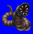
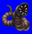
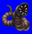
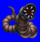

Length: 4 meters +Weight: ???
Habitat: Damp places Origin: Europe
Meaning: English word "worm"
Modeled after small slithery creatures like earthworms that have no hands or feet. For games, it usually takes the form of a giant worm with a large, gaping maw capable of spitting poison. Some types of worms can regenerate into two seperate entities if cut in half. In Europe, there have been some unverified reports of large worms that kill by wrapping its body around its victim.